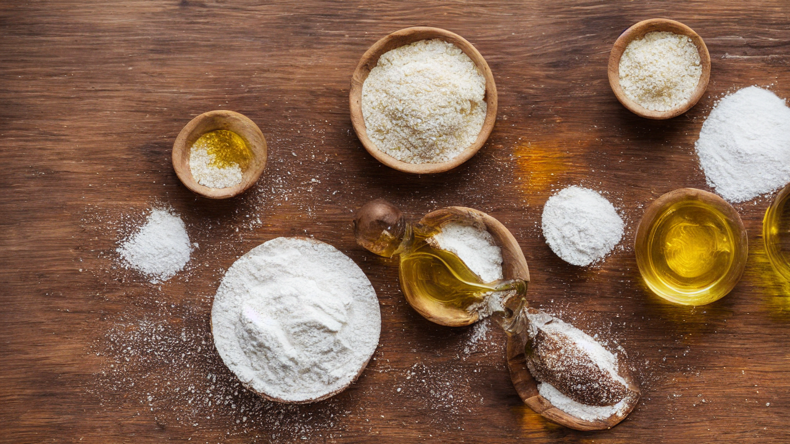
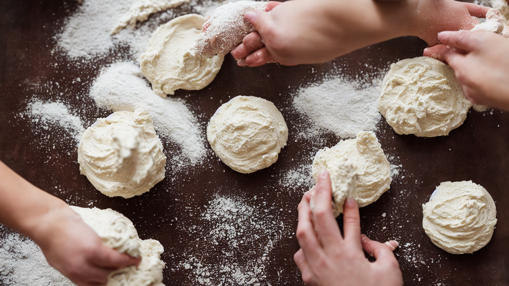
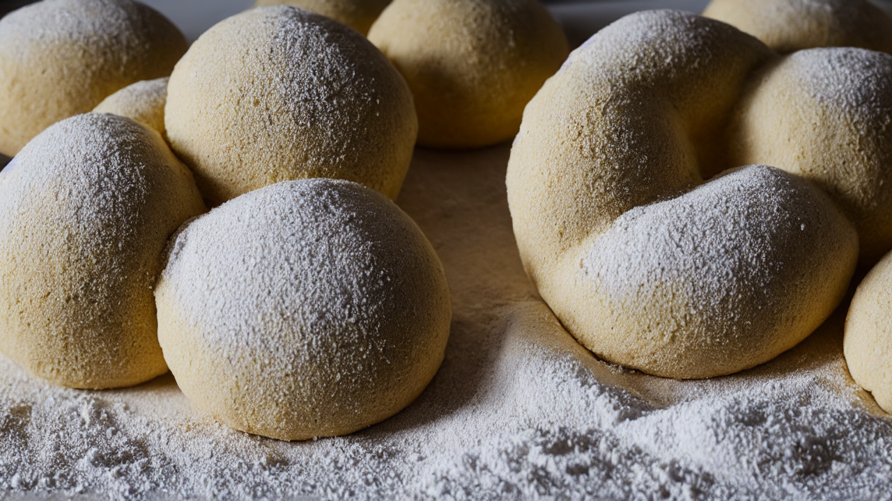
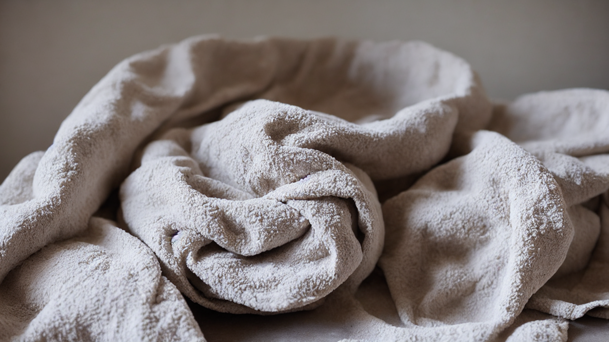
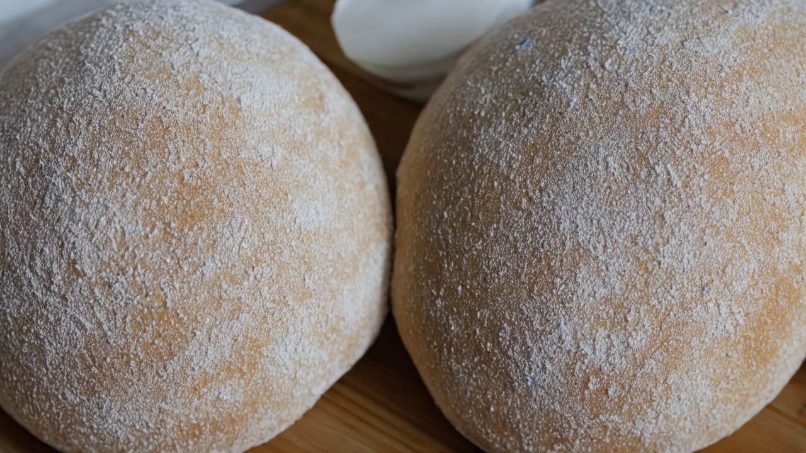
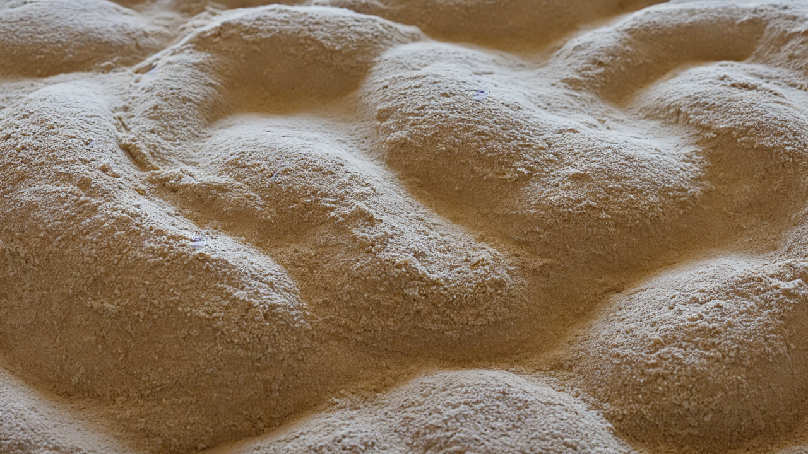
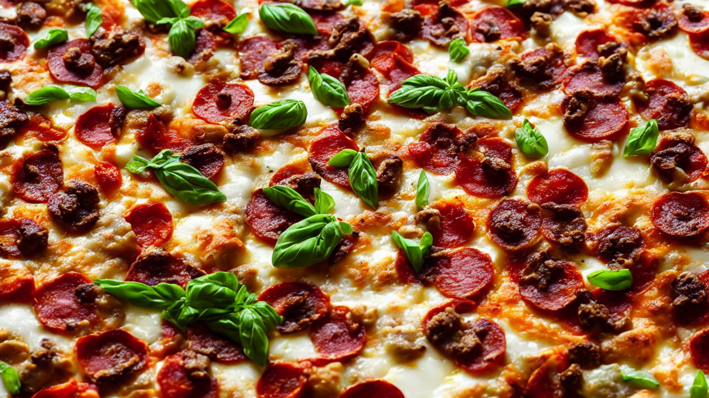
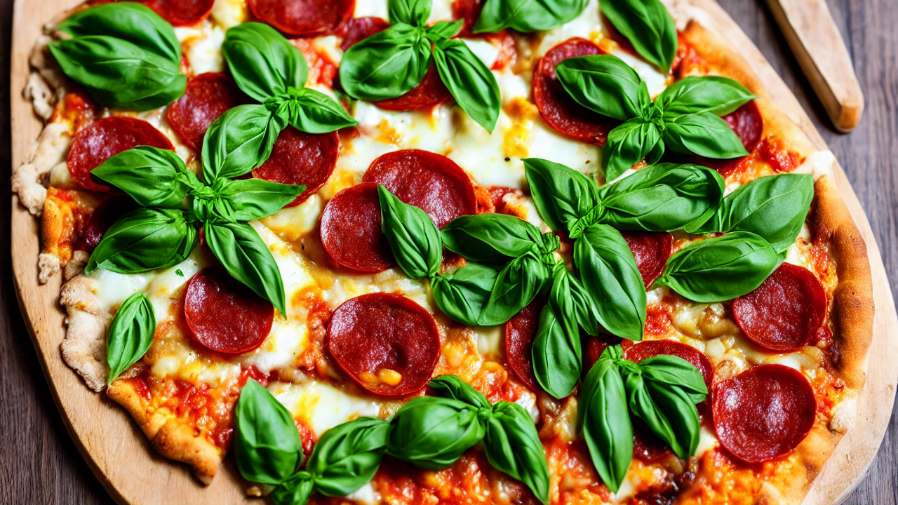

Perfect Homemade Pizza Dough – Crispy, Chewy, and Full of Flavor!
Master the art of homemade pizza dough with this easy recipe! Achieve a crispy, chewy crust perfect for your favorite toppings. Ideal for beginners and pros alike – no takeout needed! #PizzaDough
Ingredients
- just 4 simple ingredients: flour
- yeast
- water
- olive oil
- Let's get that dough rising!
Instructions

This homemade pizza dough is so good, you'll never order takeout again! Let's make a crispy, chewy crust that's pure perfection.

You'll need just 4 simple ingredients: flour, yeast, water, and olive oil. Let's get that dough rising!

Mix the dry ingredients first, then slowly add warm water. Watch the dough come together in your hands!

Knead for 8-10 minutes until smooth and elastic. This step is key for that perfect crust texture!

Let the dough rest for 2 hours in a warm place. It's magic time – the dough will double in size!

Shape into a ball, then let it relax for 30 minutes. Ready to stretch that dough into a masterpiece!

Stretch the dough into a circle, keeping the edges thicker for that perfect crispy crust. Let's get creative!

Add your favorite toppings, then bake at 475°F. Watch that crust turn golden and bubbly!

Slice, savor, and enjoy your homemade pizza! Don't forget to subscribe for more recipes like this!